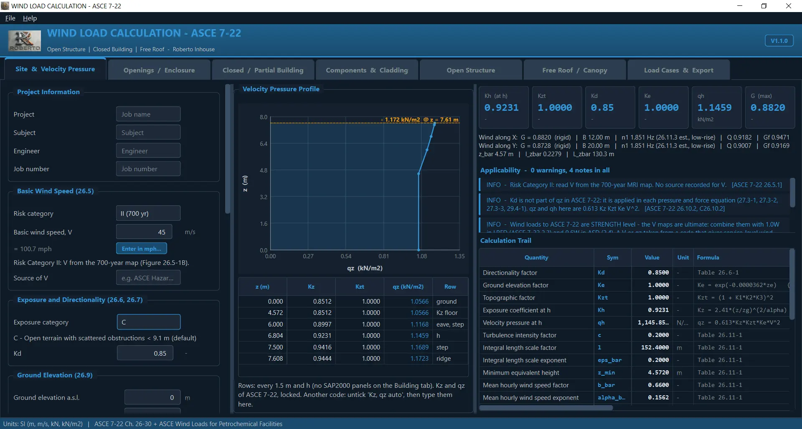
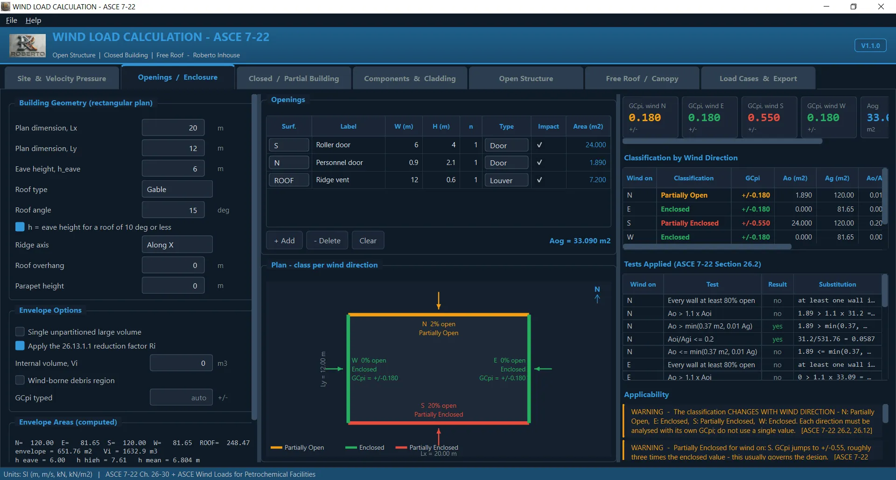
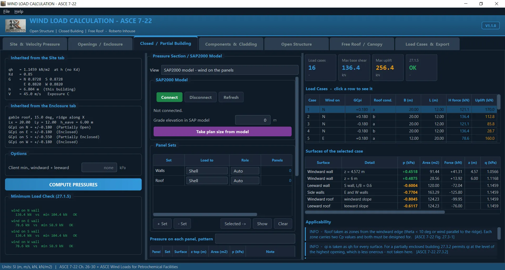
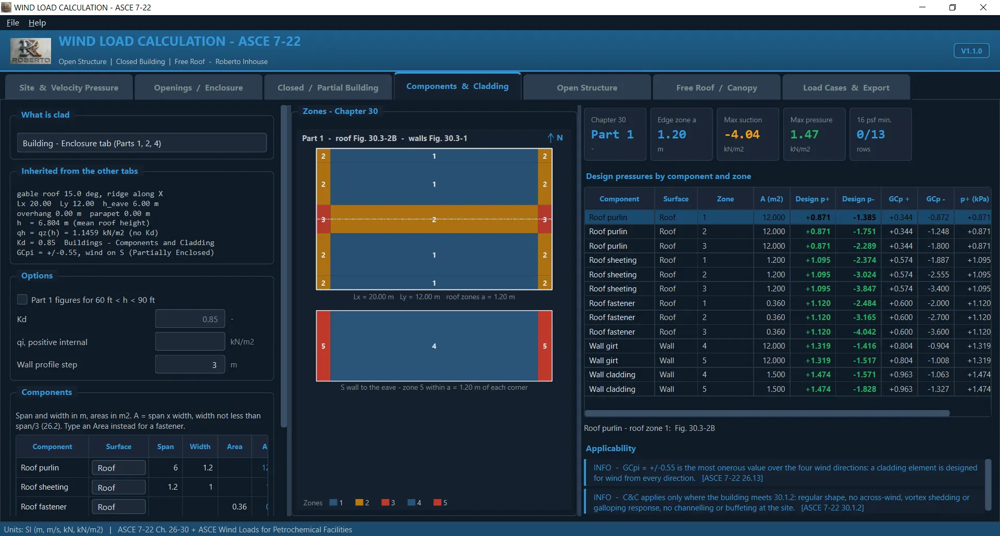
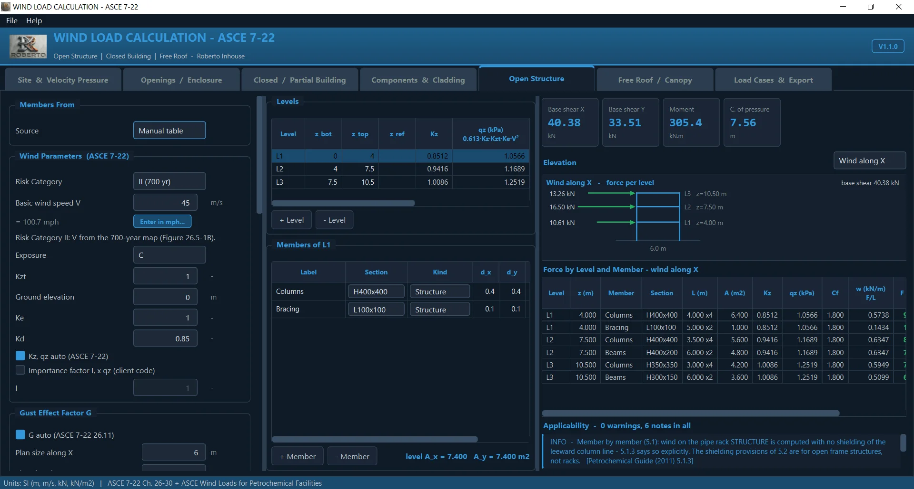
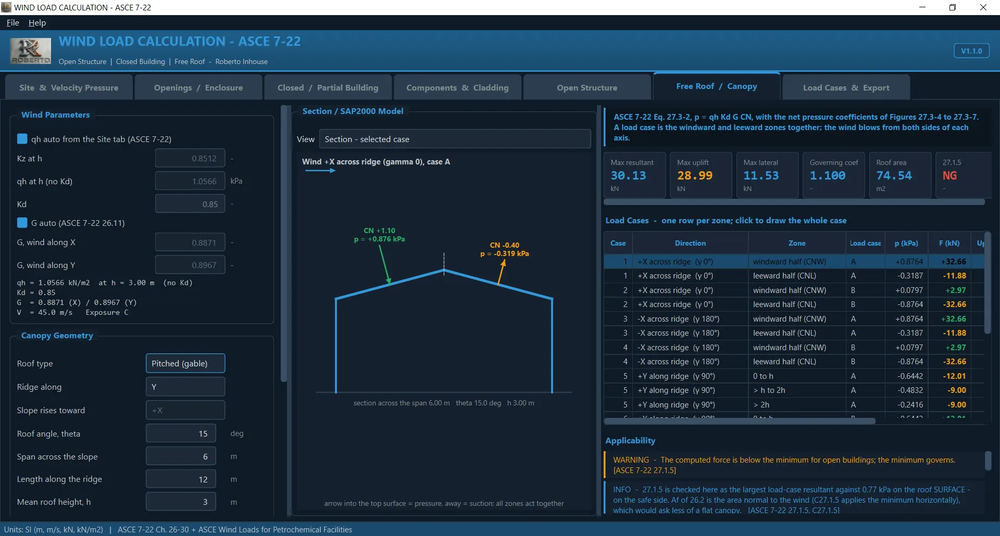
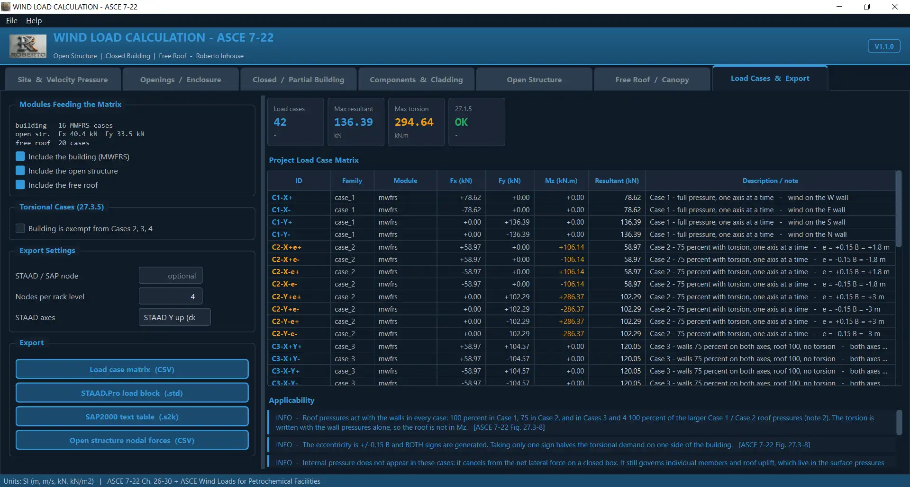
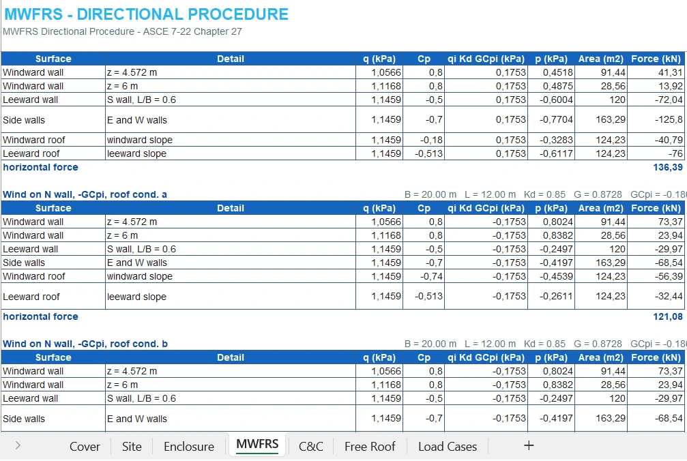
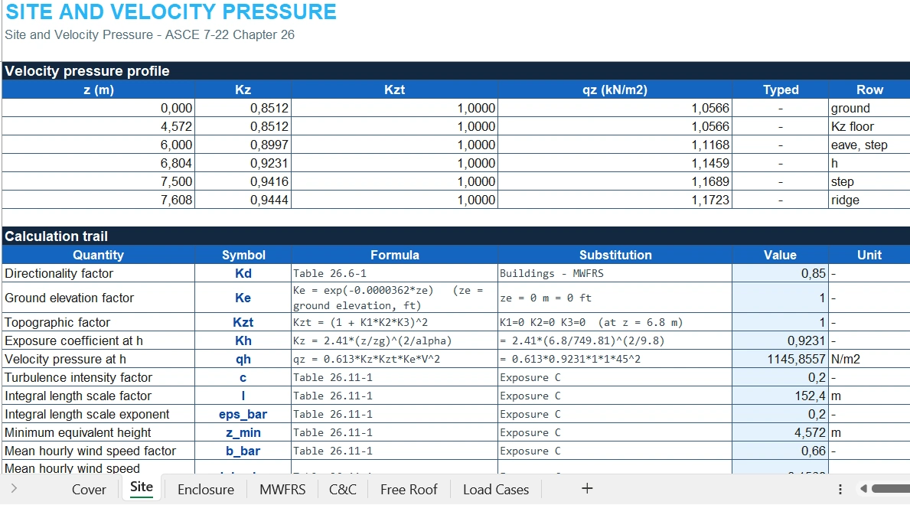

Tính tải trọng
Tính tải gió theo ASCE 7-22
Tải gió theo ASCE 7-22 cho kết cấu hở (pipe rack, khung thép hở), nhà kín và kín một phần, mái hở và mái che — kết nối SAP2000 để đọc mô hình và gán tải ngược lại.

⤢







Tính năng chính
- Áp lực vận tốc qz tự động theo <b>Chương 26</b>: Kz, Kzt, Kd, Ke, hệ số giật G / Gf — hệ số nào cũng sửa tay được
- Phân loại kín / kín một phần / hở theo từng hướng gió, kèm GCpi
- Nhà: hệ chịu lực chính <b>MWFRS Chương 27</b> (16 trường hợp tải, có xoắn) và <b>C&C Chương 30</b> Phần 1–4
- Kết cấu hở theo hướng dẫn ASCE <i>Wind Loads for Petrochemical and Other Industrial Facilities</i>: khung, ống, lớp chống cháy
- Mái hở / mái che theo ASCE 7-22: gió hai phía mỗi trục, dòng thoáng hoặc bị cản
- <b>Kết nối SAP2000</b>: đọc khung và tấm từ mô hình, gán tải gió ngược lại vào mô hình
- Ma trận trường hợp tải; xuất CSV, STAAD.Pro, SAP2000 .s2k và báo cáo Excel đầy đủ từng bước
Yêu cầu hệ thống
Windows / SAP2000 (tuỳ chọn)